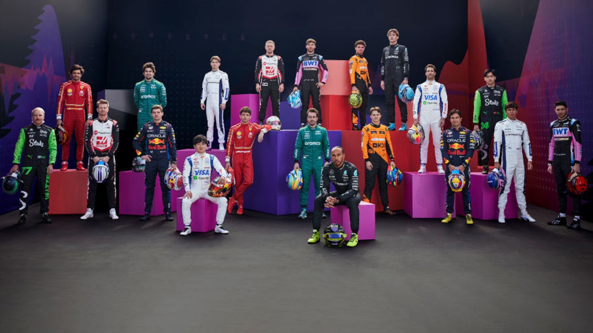
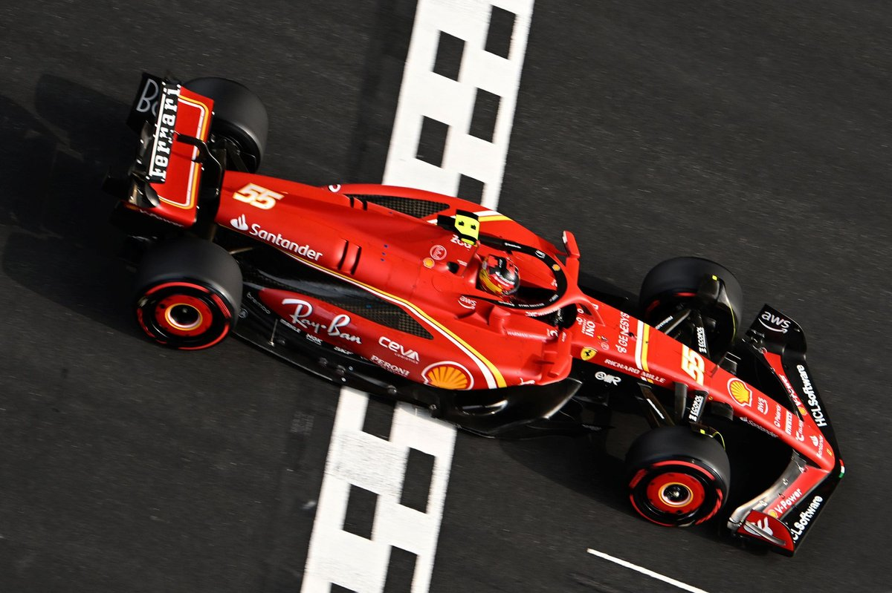
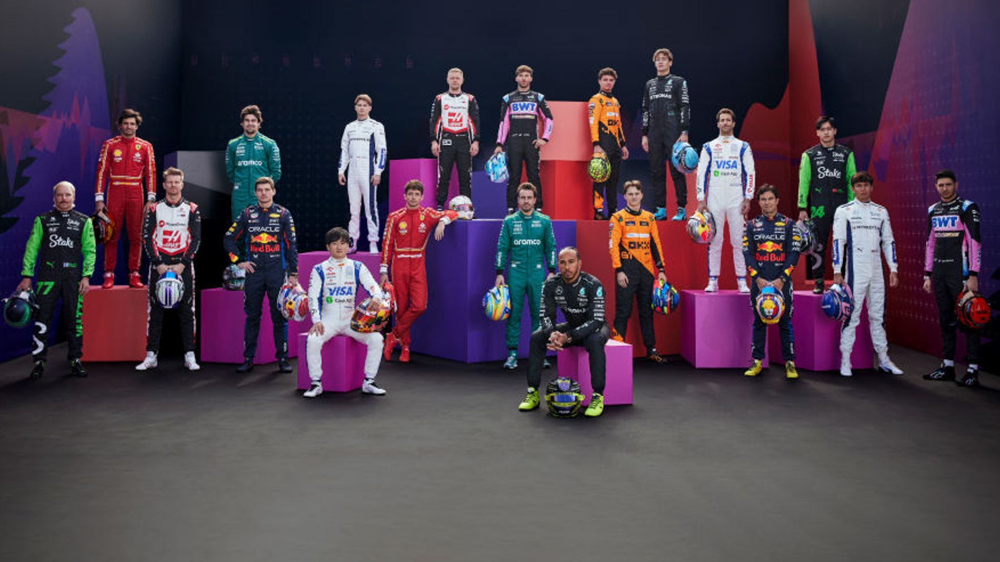
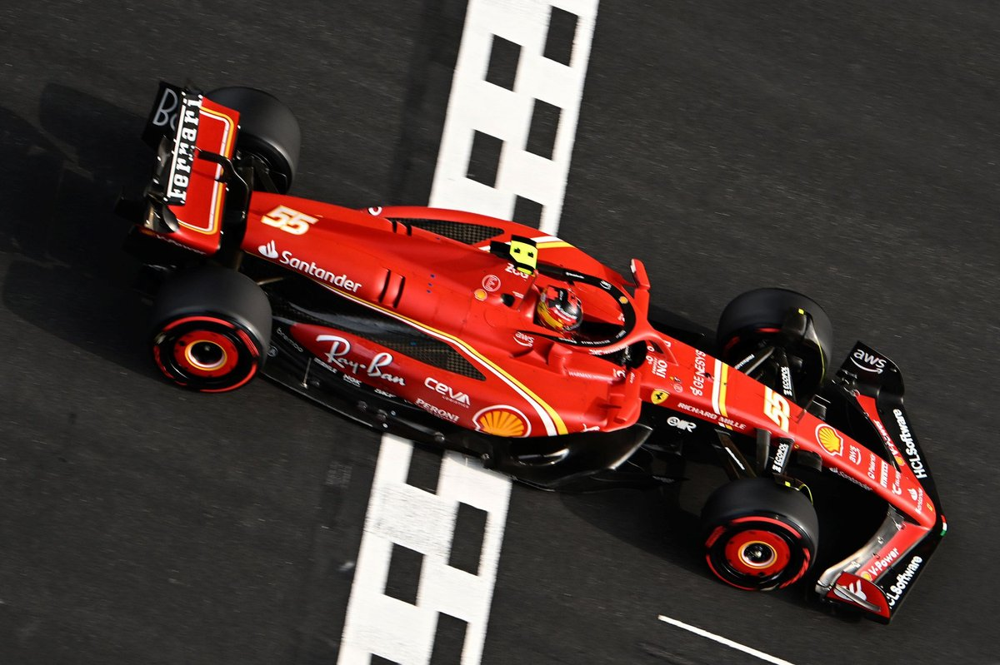

Formula 1
 



Oracle Red Bull Racing
Red Bull Racing, based in Milton Keynes, United Kingdom, is one of the most successful teams in Formula 1 history. Founded in 2004, they have consistently challenged for both drivers' and constructors' championships. Led by Team Principal Christian Horner, Red Bull Racing is known for its innovative design philosophy and driver development program.
Drivers
- Max Verstappen
- Country: Netherlands
- Podiums: 104
- Points: 2747.5
- Grand Prix entered: 192
- World Championships: 3
- Highest race finish: 1 (x59)
- Highest grid position: 1
- Date of birth: 30/09/1997
- Place of birth: Hasselt, Belgium
- Sergio Perez
- Country: Mexico
- Podiums: 39
- Points: 1593
- Grand Prix entered: 265
- World Championships: 0
- Highest race finish: 1 (x6)
- Highest grid position: 1
- Date of birth: 26/01/1990
- Place of birth: Guadalajara, Mexico
Scuderia Ferrari HP
Ferrari, the iconic Italian racing team based in Maranello, Italy, is synonymous with Formula 1. With a rich history dating back to the sport's inception, Ferrari is the oldest and most successful team in Formula 1. Led by Team Principal Mattia Binotto, Ferrari's passionate fanbase and legendary drivers have made them a dominant force in the sport.
Drivers
- Charles Leclerc
- Country: Monaco
- Podiums:34
- Points: 1187
- Grands Prix entered: 132
- World Championships: 0
- Highest race finish: 1 (x6)
- Highest grid position: 1
- Date of birth: 16/10/1997
- Place of birth: Monte Carlo, Monaco
- Carlos Sainz
- Country: Spain
- Podiums: 21
- Points: 1075.5
- Grands Prix entered: 191
- World Championships: 0
- Highest race finish: 1 (x3)
- Highest grid position: 1
- Date of birth: 01/09/1994
- Place of birth: Madrid, Spain
Mercedes-AMG Petronas
Mercedes-AMG Petronas Formula One Team, based in Brackley, United Kingdom, is the reigning powerhouse of Formula 1. Since their return to the sport in 2010, Mercedes has dominated the turbo-hybrid era, winning multiple drivers' and constructors' championships. Led by Team Principal Toto Wolff, Mercedes is renowned for its engineering excellence and strategic prowess.
Drivers
- Lewis Hamilton
- Country: United Kingdom
- Podiums: 197
- Points: 4674.5
- Grand Prix entered: 339
- World Championships: 7
- Highest race finish: 1 (x103)
- Highest grid position: 1
- Date of birth: 07/01/1985
- Place of birth: Stevenage, England
- George Russell
- Country: United Kingdom
- Podiums 11
- Points: 513
- Grand Prix entered: 111
- World Championships: 0
- Highest race finish: 1 (x1)
- Highest grid position:
- Date of birth: 1
- Place of birth: King's Lynn, England
McLaren Racing
McLaren Racing, based in Woking, United Kingdom, is one of the most successful teams in Formula 1 history. Founded in 1963 by Bruce McLaren, the team has won multiple drivers' and constructors' championships. Led by Team Principal Andreas Seidl, McLaren is known for its rich racing heritage, innovation, and competitive spirit, consistently striving for excellence on the track.
Drivers
- Lando Norris
- Country: United Kingdom
- Podiums: 17
- Points: 734
- Grand Prix entered: 111
- World Championships: 0
- Highest race finish: 1 (x1)
- Highest grid position: 1
- Date of birth: 13/11/1999
- Place of birth: Bristol, England
- Oscar Piastri
- Country: Australia
- Podiums: 2
- Points: 150
- Grand Prix entered: 29
- World Championships: 0
- Highest race finish: 2 (x1)
- Highest grid position: 2
- Date of birth: 06/04/2001
- Place of birth: Melbourne, Australia
Aston Martin
Aston Martin Cognizant Formula One Team, based in Silverstone, United Kingdom, is the newest entrant in Formula 1. With a rich history in motorsport, Aston Martin returns to Formula 1 after a hiatus of over 60 years. Led by Team Principal Otmar Szafnauer, Aston Martin brings British elegance and performance to the grid, aiming to compete at the highest level.
Drivers
- Fernando Alonso
- Country: Spain
- Podiums: 106
- Points: 2300
- Grand Prix entered: 387
- World Championships: 2
- Highest race finish: 1 (x32)
- Highest grid position: 1
- Date of birth: 29/07/1981
- Place of birth: Oviedo, Spain
- Lance Stroll
- Country: Canada
- Podiums: 3
- Points: 279
- Grand Prix entered: 150
- World Championships: 0
- Highest race finish: 3 (x3)
- Highest grid position: 1
- Date of birth: 29/10/1998
- Place of birth: Montreal, Canada
Alpine
Alpine F1 Team, formerly known as Renault, is a French racing team based in Enstone, United Kingdom. Founded in 1977, Alpine has a storied history in Formula 1, winning multiple championships. Led by Team Principal Davide Brivio, Alpine aims to build on its heritage and return to the forefront of Formula 1 with its distinctive blue and white livery.
Drivers
- Pierre Gasly
- Country: France
- Podiums: 4
- Points: 394
- Grand Prix entered: 137
- World Championships: 0
- Highest race finish: 1(x1)
- Highest grid position: 2
- Date of birth: 07/02/1996
- Place of birth: Rouen, France
- Estaban Ocon
- Country: France
- Podiums: 3
- Points: 423
- Grand Prix entered: 140
- World Championships: 0
- Highest race finish: 1 (x1)
- Highest grid position: 3
- Date of birth: 17/09/1996
- Place of birth: Évreux, France
Williams Mercedes
Williams F1 Team, founded in 1977 by Sir Frank Williams and Patrick Head, is one of the most storied teams in Formula 1 history. Known for its competitive spirit and engineering excellence, Williams has secured nine Constructors' Championships and seven Drivers' Championships. The team is celebrated for its iconic blue and white livery and has been home to legendary drivers like Ayrton Senna, Nigel Mansell, and Alain Prost. Despite recent challenges, Williams continues to strive for a return to the front of the grid under new ownership and management.
Drivers
- Alex Albon
- Country: Thailand
- Podiums: 2
- Points: 228
- Grand Prix entered: 88
- World Championships: 0
- Highest race finish: 3 (x2)
- Highest grid position: 4
- Date of birth: 23/03/1996
- Place of birth: London, England
- Logan Sargeant
- Country: United States
- Podiums: 0
- Points: 1
- Grand Prix entered: 28
- World Championships: 0
- Highest race finish: 10 (x1)
- Highest grid position: 6
- Date of birth: 31/12/2000
- Place of birth: Fort Lauderdale, Florida
Visa Cash App Racing Bulls
Scuderia Visa Cash App Racing Bulls, previously known as Toro Rosso, is an Italian racing team based in Faenza, Italy. Established in 2006 as the sister team to Red Bull Racing, Visa Cash App Racing Bulls serves as a talent development program for young drivers. Led by Team Principal Franz Tost, Visa Cash App Racing Bulls has shown flashes of brilliance, often challenging larger teams with its innovative approach.
Drivers
- Yuki Tsunoda
- Country: Japan
- Podiums: 0
- Points: 76
- Grand Prix entered: 73
- World Championships: 0
- Highest race finish: 4 (x1)
- Highest grid position: 6
- Date of birth: 11/05/2000
- Place of birth: Sagamihara, Japan
- Daniel Ricciardo
- Country: Australia
- Podiums: 32
- Points: 1322
- Grand Prix entered: 246
- World Championships: 0
- Highest race finish: 1 (x8)
- Highest grid position: 1
- Date of birth: 01/07/1989
- Place of birth: Perth, Australia
Kick Sauber
Kick Sauber, formerly known as Alfa Romeo Racing, is a Swiss racing team based in Hinwil, Switzerland. Founded in 1993, Kick Sauber has a long-standing partnership with Italian car manufacturer Kick Sauber. Led by Team Principal Frédéric Vasseur, Kick Sauber combines Swiss precision with Italian flair to compete in Formula 1.
Drivers
- Valterri Bottas
- Country: Finland
- Podiums: 67
- Points: 1797
- Grand Prix entered:229
- World Championships: 0
- Highest race finish: 1 (x10)
- Highest grid position: 1
- Date of birth: 28/08/1989
- Place of birth: Nastola, Finland
- Zhou Guanyu
- Country: China
- Podiums: 0
- Points: 12
- Grand Prix entered: 51
- World Championships: 0
- Highest race finish: 8 (x1)
- Highest grid position: 5
- Date of birth: 30/05/1999
- Place of birth: Shanghai, China
Haas Ferrari
Haas F1 Team, established in 2016 by American businessman Gene Haas, is the first American-led Formula 1 team in over 30 years. Known for its unique approach of leveraging technical partnerships, notably with Ferrari, Haas quickly made a mark by scoring points in its debut race. The team has focused on steady development and competitive performances, aiming to challenge the midfield pack. Haas continues to build its presence in the sport with a blend of experienced and young drivers.
Drivers
- Nico Hülkenberg
- Country: Germany
- Podiums: 0
- Points: 536
- Grand Prix entered: 213
- World Championships: 0
- Highest race finish: 4 (x3)
- Highest grid position: 1
- Date of birth: 19/08/1987
- Place of birth: Emmerich am Rhein, Germany
- Kevin Magnussen
- Country: Denmark
- Podiums: 1
- Points: 187
- Grand Prix entered: 171
- World Championships: 0
- Highest race finish: 2 (x1)
- Highest grid position: 4
- Date of birth: 05/10/1992
- Place of birth: Roskilde, Denmark